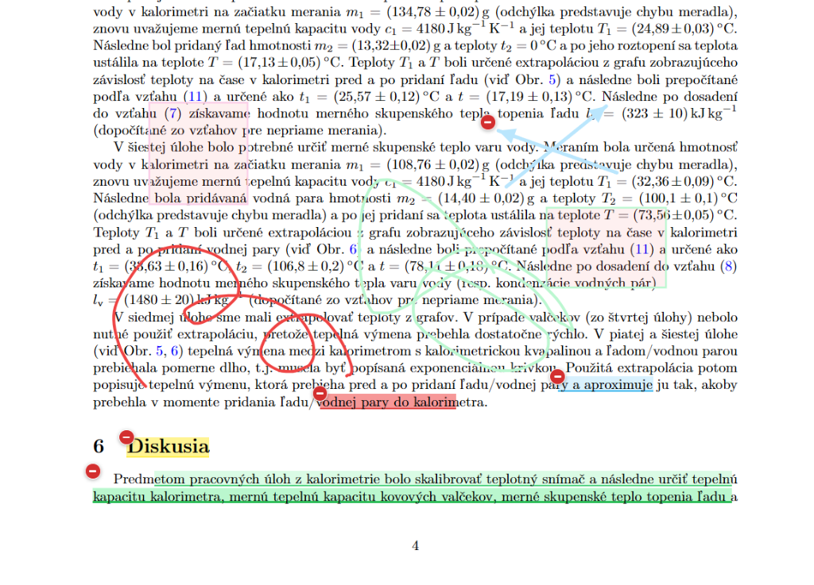
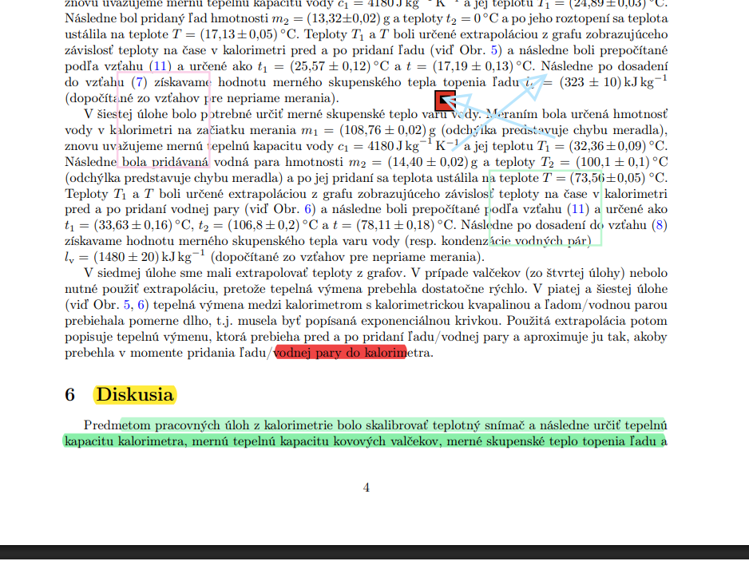
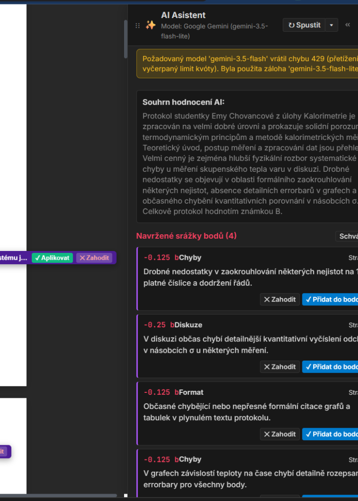
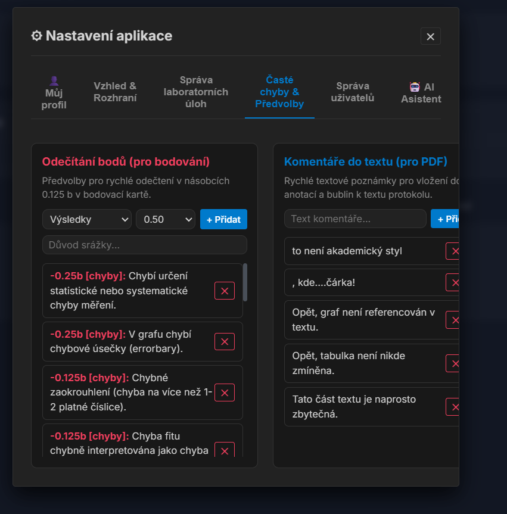
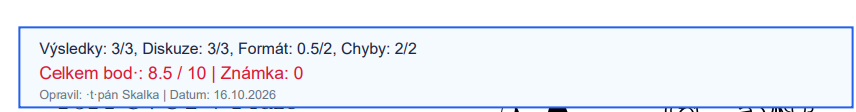

Praktika – Dokumentace a uživatelská příručka
Praktika je moderní, komplexní webový systém navržený pro vyučující, garanty a asistenty univerzitních fyzikálních praktik. Systém digitalizuje celý proces hodnocení laboratorních protokolů od hromadného nahrání přes precizní vizuální anotace v interaktivním PDF studiu až po finální export s bodovým razítkem.
Spojuje intuitivní práci s PDF (jako v Adobe Acrobat), okamžitou asistenci pokročilých modelů Google Gemini s hloubkovou kontrolou fyzikální metodiky a bezpečné hromadné operace se správou databáze.
Rychlý start
Ke spuštění aplikace stačí standardní instalace Pythonu 3.10+ a několika málo knihoven:
# 1. Klonování repozitáře
git clone https://github.com/TheLittleRock/Praktika.git
cd Praktika
# 2. Vytvoření virtuálního prostředí
python3 -m venv venv
source venv/bin/activate
# 3. Instalace závislostí
pip install -r requirements.txt
# 4. Spuštění serveru
uvicorn app.main:app --host 0.0.0.0 --port 8000 --reloadAplikace se otevře v prohlížeči na http://localhost:8000.
Výchozí uživatelské účty
| Role | Login | Heslo | Oprávnění |
|---|---|---|---|
| Administrátor | admin | admin123 | Plný přístup, správa uživatelů, úloh, termínů, databáze a záloh |
| Asistent | asistent | asistent123 | Hodnocení protokolů, oprava přiřazených i volných protokolů |
Interaktivní PDF Annotation Studio
Studio je srdcem aplikace. Umožňuje rychlé procházení stran protokolu, vkládání korekcí a okamžitou synchronizaci s hodnocením.

Dostupné nástroje
- Ruka (Hand): Pohyb po plátně a posun stránek.
- Zvýrazňovač (Highlight): Výběr textu s okamžitým žlutým zvýrazněním a otevřením komentářového boxu.
- Pero (Ink): Kreslení od ruky na plátno. Křivky jsou ukládány vektorově a plynule vyhlazovány.
- Obdélník (Rect) & Šipka (Arrow): Opatřeny poloprůhlednou výplní a šipkami s uzavřeným hrotem.
- Psací stroj (Typewriter): Kliknutí kamkoliv do textu a přímé vepsání poznámky zvolenou barvou.
- Acrobat Komentářový lístek: Připnutí kruhového lístku
[⊖]přímo na zkoumané místo s možností okamžitého odečtu bodů.
Plynulý zoom & centrování
Aplikace rozlišuje mezi gestem na touchpadu a kolečkem myši s klávesou Ctrl. Zoom je vyhlazený, citlivost obou metod je nezávisle nastavitelná v Nastavení a střed zobrazeného dokumentu zůstává během zoomování stabilní.
Inteligentní AI Asistent (Google Gemini)
Asistent využívá modely gemini-3.5-flash-lite, gemini-3.5-flash nebo gemini-3.8-flash k detailní analýze odevzdaného PDF protokolu.

Co AI asistent kontroluje:
- Exhaustivní vyhledávání chyb: Vyhledává 25 až 60+ konkrétních nedostatků v celém protokolu.
- Interpunkce vzorců a syntax: Kontrola, zda jsou vzorce součástí vět a zda za vzorcem následuje čárka a malým písmenem
", kde". - Typografie jednotek: Povinná mezera mezi číslem a jednotkou (např.
20 °C, nikoliv20°C). - Errorbary a grafy: Kontrola chybových úseček u všech naměřených bodů a popisů os.
- Souhrnné zhodnocení sekcí: Generuje souhrnné anotace na nadpisy sekcí Úvod, Postup měření, Výsledky, Diskuze a Závěr.
Kliknutím na ✓ Aplikovat přímo u plovoucího štítku na plátně nebo v bočním šuplíku se návrh okamžitě propíše do PDF jako trvalá anotace a odstraní se z návrhů v databázi. Stav přežije zavření a znovuotevření protokolu.
Bodovací systém
Hodnocení je rozděleno do čtyř oficiálních kategorií s celkovým součtem 10.0 bodů:
- Výsledky a vypracování (max 3.0 b): Splnění všech úkolů ze zadání, mezivýpočty, přesnost fitů.
- Fyzikální diskuze (max 3.0 b): Kvantitativní srovnání s tabulkou v násobcích σ, analýza systematických chyb.
- Formát a styl (max 2.0 b): Pevná osnova, akademický jazyk (3. osoba / pasivum), citace tabulek a grafů.
- Chyby a nejistoty (max 2.0 b): Zaokrouhlování chyb na 1–2 platné cifry, errorbary, odchylky.
Převod na známku se provádí automaticky (A: ≥ 9.0, B: ≥ 8.0, C: ≥ 6.0, D: ≥ 4.0, E: ≥ 2.0, F: < 2.0) s možností manuálního přepsání.
Hromadné akce s protokoly
V přehledu protokolů lze zaškrtnout jeden, několik nebo všechny protokoly (pomocí checkboxu v záhlaví). Následně se zobrazí plovoucí lišta pro hromadné operace:
- ✎ Hromadná úprava: Změna semestru, termínu praktika, laboratorní úlohy nebo přiřazení asistenta pro desítky protokolů najednou.
- 🗑️ Hromadné smazání: Bezpečné odstranění vybraných protokolů včetně jejich hodnocení, anotací a diskových souborů.

Správa databáze & Diagnostika
Administrátoři mají v Nastavení k dispozici specializovanou sekci pro správu a diagnostiku SQLite databáze.

Klíčové funkce:
- Statistiky: Velikost souboru databáze na disku, počet protokolů, hodnocení a uživatelů.
- Zálohování jedním klikem: Okamžité vytvoření snapshotu databáze s časovým razítkem.
- Obnova databáze: Rychlé vrácení databáze do stavu libovolné předchozí zálohy.
- Automatická rotace: Systém provádí automatickou denní zálohu při startu a udržuje rotaci posledních 7 dnů.
- Diagnostika a integrita: Spuštění
PRAGMA integrity_checka zobrazení verze SQLite přímo v UI.
Exporty a finální výstupy
Při uložení a schválení protokolu se generuje finální opravené PDF.

Export využívá TrueType písma DejaVuSans a DejaVuSans-Bold, což garantuje perfektní vykreslení všech českých a slovenských znaků (např. Štěpán Skalka, Měření tíhového zrychlení).
Metodika a pravidla hodnocení
Systém striktně vymáhá oficiální pravidla garantů fyzikálního praktika:
- Zákaz prázdných výmluv: Fráze jako "lidský faktor" nebo "zastaralý přístroj" nejsou uznávány jako vysvětlení systematické chyby.
- Sazba vzorců: Vzorce jsou součástí věty a musí mít čárku/tečku. Za vzorcem s čárkou pokračuje text malým písmenem:
", kde...". - Errorbary: Všechny chybové úsečky v grafech jsou povinné a nazývají se výhradně errorbary.
- Zaokrouhlování: Nejistota smí mít maximálně 1–2 platné číslice a hodnota musí končit na stejném řádovém místě.
REST API přehled
FastAPI backend poskytuje bohaté REST rozhraní:
| Metoda | Endpoint | Popis |
|---|---|---|
POST | /api/auth/login | Přihlášení a vydání JWT tokenu |
GET | /api/protocols | Seznam protokolů s filtrováním dle semestru, stavu a asistenta |
POST | /api/protocols/upload | Nahrání jednoho nebo více PDF protokolů |
POST | /api/protocols/bulk-update | Hromadná změna metadat vybraných protokolů |
POST | /api/protocols/bulk-delete | Hromadné smazání vybraných protokolů |
POST | /api/protocols/{id}/ai-proposals/action | Schválení či zamítnutí konkrétního návrhu AI |
POST | /api/database/backup | Vytvoření zálohy SQLite databáze |
POST | /api/database/restore | Obnova SQLite databáze ze záložního souboru |